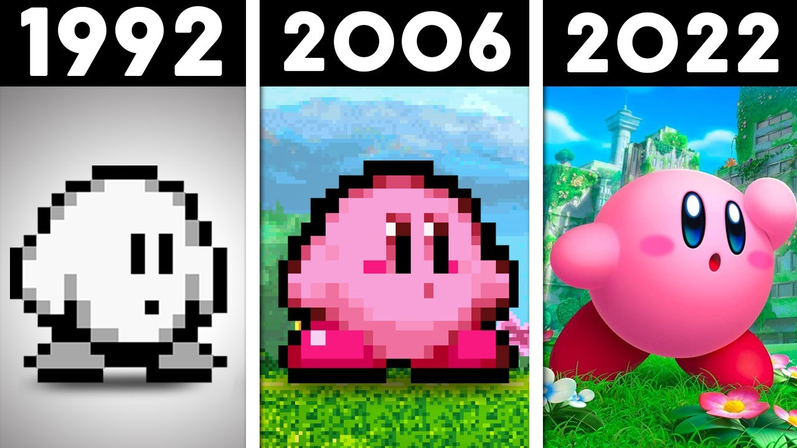

Em 1992, Masahiro Sakurai, um jovem desenvolvedor da HAL Laboratory, estava criando um jogo para o Game Boy que deveria ser acessível para qualquer pessoa. Enquanto o design final do herói não era decidido, Sakurai usou um pequeno círculo sorridente como marcador de posição para testar as animações. A simplicidade daquela silhueta conquistou a equipe, e o que seria apenas um rascunho temporário tornou-se o protagonista oficial de Kirby's Dream Land. Curiosamente, devido às limitações de cor do Game Boy e a uma confusão de comunicação com a Nintendo americana, o público ocidental achou que ele era branco (como visto na capa do primeiro jogo), quando na verdade Sakurai sempre o imaginou rosa..

Versões do Kirby
O verdadeiro divisor de águas veio em 1993, com o lançamento de Kirby's Adventure para o NES. Foi ali que a franquia ganhou sua mecânica mais icônica: a Capacidade de Cópia. Ao permitir que Kirby engolisse inimigos e absorvesse seus poderes, a Nintendo transformou um jogo simples em um universo de possibilidades estratégicas. Essa versatilidade foi expandida na era Super Nintendo com Kirby Super Star, que introduziu o sistema de ajudantes e consolidou o estilo de arte vibrante e detalhado da série. Nos anos seguintes, Kirby provou ser um dos personagens mais flexíveis da empresa, estrelando jogos de golfe, pinball, corridas e até aventuras feitas inteiramente de fios de lã ou argila.